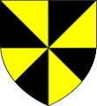

1502239 Mary MacDonald

1502232 Lord Angus Og MacDonald of the Isles
* 1272 Scotland
† 1329 Scotland
Lord of the Isles
Blev högst 57 år
* 1272 Scotland
† 1329 Scotland
Lord of the Isles
Blev högst 57 år
3004464 Lord Angus Mor MacDonald of the Isles
* omkring 1248 Finlaggen Castle, Islay, Scotland
† 1292 Scotland
Lord of the Isles
Blev ca 44 år
* omkring 1248 Finlaggen Castle, Islay, Scotland
† 1292 Scotland
Lord of the Isles
Blev ca 44 år

3004465 Lady Helen nic Collin Campbell
* 1252 Lochawe, Argyll and Bute, Scotland
† 1296 Iona, Argyll, Scotland
Blev högst 44 år
* 1252 Lochawe, Argyll and Bute, Scotland
† 1296 Iona, Argyll, Scotland
Blev högst 44 år
6008930 Sir Colin Campbell of Lochow
* omkring 1230 Lochow, Argyllshire, Scotland
† 1294 Ath-dearg of Lorn, Argyllshire, Scotland
Blev ca 64 år
* omkring 1230 Lochow, Argyllshire, Scotland
† 1294 Ath-dearg of Lorn, Argyllshire, Scotland
Blev ca 64 år

6008931 Janet Sinclaire
* omkring 1232 Rosslyn Castle, Edinburgh, Scotland
† 1271-02-01 Dunnyglass, Scotland
Blev ca 39 år
* omkring 1232 Rosslyn Castle, Edinburgh, Scotland
† 1271-02-01 Dunnyglass, Scotland
Blev ca 39 år
3004479 Agnes O'Cathan
* omkring 1270 Limavady, Scotland
* omkring 1270 Limavady, Scotland
6008958 Guy O'Cathan